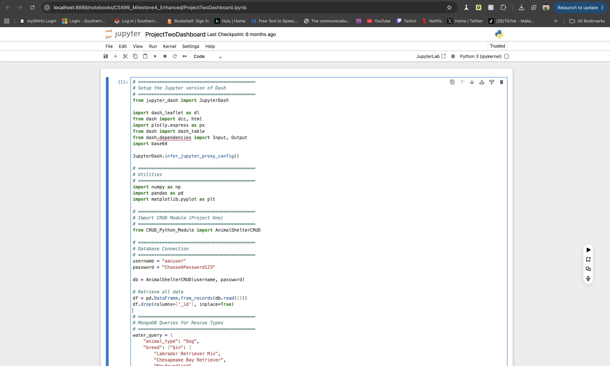
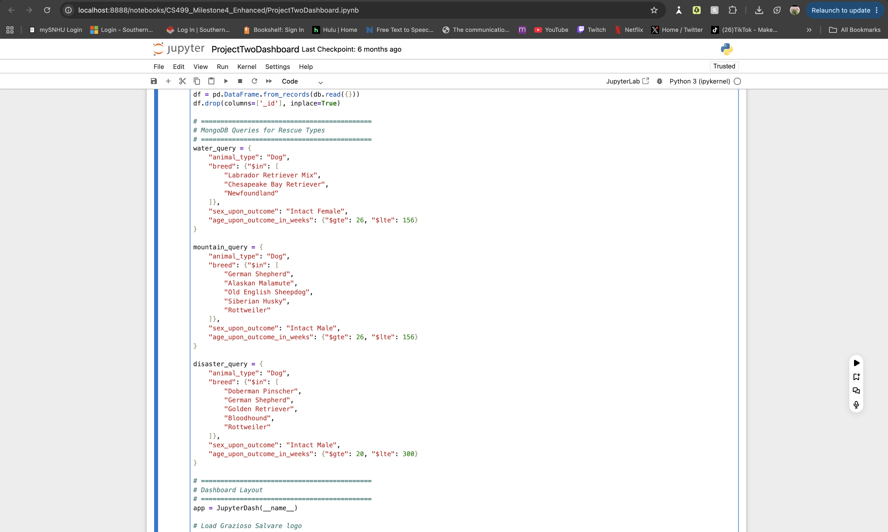
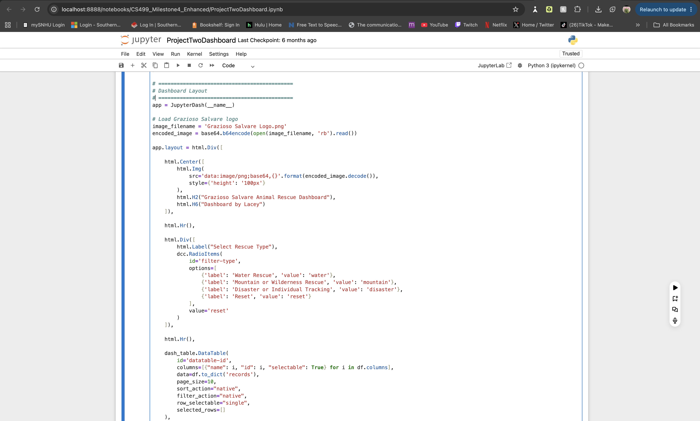
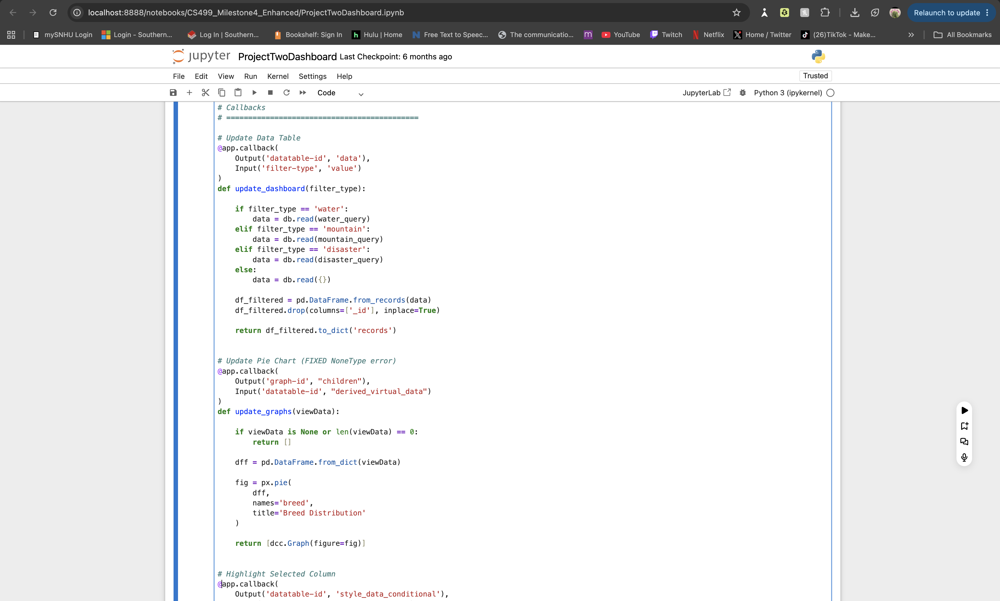
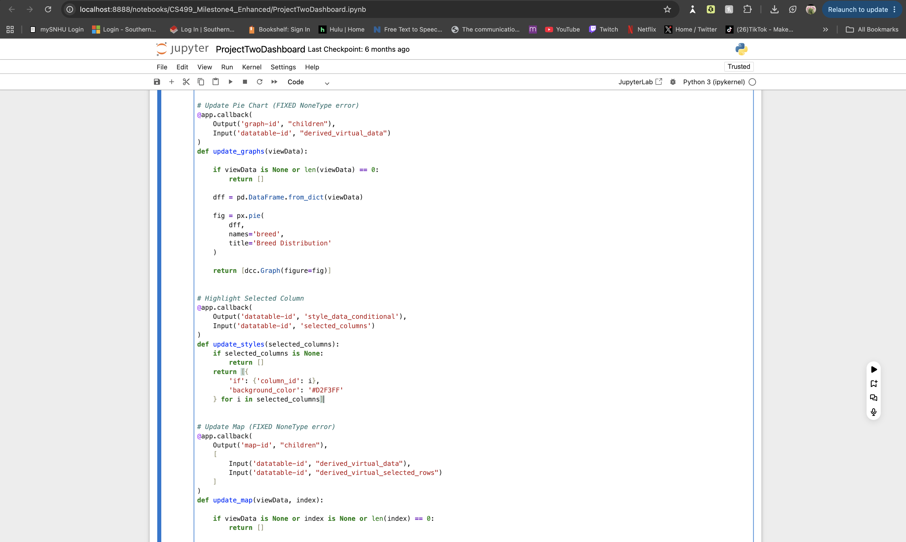

This artifact is a MongoDB-based dashboard application developed using Python, Dash, and PyMongo. It demonstrates database integration, CRUD operations, dynamic filtering, and data visualization for animal rescue data from the Austin Animal Center dataset.
The dashboard connects to a MongoDB database and retrieves animal rescue records using CRUD operations. Users can filter records based on rescue type, view results in a dynamic data table, and visualize breed distributions through interactive charts. The application uses Python Dash callbacks to update the interface dynamically based on user input.
The current implementation uses basic filtering queries that do not fully leverage indexing or optimized query strategies. As the dataset size increases, performance may degrade due to unoptimized retrieval logic. Additionally, validation of incoming data is minimal, increasing the risk of inconsistent or malformed records affecting dashboard output. Some query logic is also repeated across functions, reducing maintainability.
Planned improvements include implementing indexed query optimization, refactoring repeated query logic into reusable functions, and enhancing data validation. Additional improvements include using aggregation pipelines to improve query efficiency and restructuring database access patterns for better scalability and maintainability.
The following screenshots demonstrate MongoDB connectivity, query execution, dashboard layout, callback logic, and visualization output within the Grazioso Salvare dashboard application.




